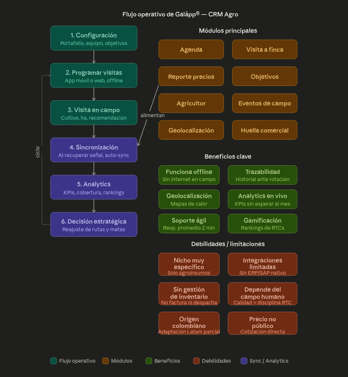

Impulsa tu operación con tecnología de vanguardia. Integra ventas, inventario, producción y analítica en una sola plataforma diseñada para la industria biotecnológica boliviana.
Líderes en innovación industrial en Bolivia desde 2016
Impulsar el bienestar social y la sostenibilidad ambiental a través de soluciones innovadoras y de alta calidad. Nos dedicamos al desarrollo de productos y servicios que promueven el avance científico y tecnológico.
Posicionarnos como líderes del sector industrial en Bolivia, impulsando la innovación, la calidad y el desarrollo regional. Marcar el rumbo del mercado y forjar un futuro próspero y sostenible.
Innovación, Calidad, Sostenibilidad, Ética, Compromiso, Liderazgo y Trabajo en equipo — los pilares que guían cada decisión.
Análisis del flujo operativo actual y las limitaciones identificadas

Solo cubre agroinsumos. No gestiona las 6 categorías de Bioteq: Automotriz, Industrial, Construcción, Bioseguridad, Hogar.
No ofrece integraciones con sistema TR4. Bioteq necesita gestión financiera, contable y de producción unificada integrada con su CRM.
No factura ni despacha. Bioteq maneja +50 productos con cadenas de suministro complejas que requieren control total.
La calidad depende totalmente de la disciplina del RTC (Representante Técnico Comercial). Sin automatización real.
Adaptación parcial a Latinoamérica. No contempla normativas bolivianas específicas (SENASAG, impuestos, facturación electrónica).
No permite seguimiento en tiempo real de las operaciones. Bioteq necesita visibilidad completa de sus procesos para una gestión eficiente.
Una plataforma unificada diseñada específicamente para las necesidades de Bioteq SRL
A diferencia de Galapp que solo cubre gestión de visitas agrícolas, nuestra propuesta integra todos los procesos empresariales de Bioteq en un ecosistema digital cohesivo.
Análisis funcional detallado
| Funcionalidad | Galapp® CRM Agro | CRM + ERP Bioteq |
|---|---|---|
| Gestión de visitas a campo | Sí | Sí + GPS avanzado |
| Agenda y programación | Sí | Sí + IA predictiva |
| Geolocalización y mapas | Sí | Sí + mapas de calor |
| Funcionalidad offline | Sí | Sí + sync inteligente |
| Multi-industria (6 categorías) | No — Solo agro | Sí — Todas las líneas |
| Gestión de inventario | No | Completo + alertas |
| Facturación electrónica Bolivia | No | SIN integrado |
| Contabilidad y finanzas | No | Plan de cuentas BO + TR4 |
| Gestión de producción | No | MRP + trazabilidad |
| Integración ERP | No | API RESTful |
| Normativa SENASAG | No | Integrado |
| Adaptación Bolivia | Parcial (Colombia) | 100% localizado |
Galapp® es un gasto permanente sin retorno. Nuestra propuesta es una inversión que genera ingresos recurrentes con cada venta.
| Concepto | Galapp® (Gasto puro) | Servisofts + Bioteq (Inversión) |
|---|---|---|
| Inversión inicial / Set-up | USD $2,500 | Bs. 49,500 (~USD $7,108) |
| Mes 1–5 (desarrollo) | USD $2,000 (Galapp pagando) | Incluido en inversión |
| Mes 6+ — Servidores, equipo & soporte | — | Bs. 6,000/mes |
| Año 1 — costo recurrente (7 meses post-dev) | USD $4,800 | Bs. 42,000 (~USD $6,030) |
| Año 2 — costo recurrente | USD $4,800 | Bs. 72,000 (~USD $10,338) |
| Año 3 — costo recurrente | USD $4,800 | Bs. 72,000 (~USD $10,338) |
| TOTAL 3 AÑOS (sin ventas) | USD $16,900 | ~USD $33,814 |
| Genera ingresos propios | No — Solo gasto | Sí — Bs. 3,000/venta/mes |
| Con 2 ventas activas | Sigue pagando USD $400/mes | Costo mensual = Bs. 0 |
| Con 5 ventas activas | Sigue pagando USD $400/mes | Ganancia neta: +Bs. 9,000/mes |
| Propiedad del software | No — Licencia ajena | Sí — Activo propio |
| Capacidad de reventa | No — Prohibido | Sí — Nueva vertical de negocio |
No es un gasto — es una inversión que se convierte en fuente de ingresos recurrentes
Un producto construido en sociedad para competir y generar ingresos recurrentes en el sector agroindustrial boliviano.
Una vez finalizado el periodo de desarrollo (5 meses), el sistema requiere infraestructura de servidores, equipo especializado y soporte. Este costo se recupera directamente con la comercialización del sistema a otras empresas.
Cada venta genera Bs. 6,000/mes de suscripción. Bioteq recibe el 50% (Bs. 3,000). Con solo 2 ventas se cubre el costo mensual completo. A partir de la 3ra venta, todo es ganancia neta.
Con Galapp pagas por usar un software ajeno. Con nuestra propuesta, Bioteq es co-propietaria de un activo digital con valor creciente.
El sistema se desarrollará con contabilidad nativa y además con capacidad de integrarse a TR4, tu sistema contable actual, eliminando doble carga de datos.
Bioteq no solo usará el software — podrá venderlo como SaaS a otras empresas del rubro, creando una fuente de ingresos recurrentes completamente nueva.
Galapp cobra $12–$20 por usuario/mes. Nuestra solución tiene costo fijo sin importar cuántos usuarios acceden al sistema.
El desarrollo de 5 meses está planificado para tener un MVP funcional para presentar en la Feria Vidas de Santa Cruz como producto comercializable.
Es un modelo de sociedad: Servisofts invierte infraestructura, ingenieros Sr y software. Bioteq invierte conocimiento y apoyo operativo. El riesgo se comparte.
Cada módulo se integra de forma nativa con el ecosistema
Plan de implementación progresivo para minimizar riesgos
Levantamiento de procesos, mapeo de flujos actuales, definición de requerimientos y arquitectura del sistema.
4–6 semanasImplementación del módulo CRM comercial, gestión de visitas, geolocalización y app móvil con modo offline.
8–10 semanasInventario, facturación electrónica SIN, contabilidad, cuentas por cobrar/pagar, logística y despacho.
10–12 semanasMódulo MRP, dashboards de inteligencia de negocio, predicciones con IA y portal de clientes.
8–10 semanasCoordinemos una reunión para profundizar en los requerimientos específicos de Bioteq SRL y presentar una propuesta económica detallada.
Incluye análisis de ROI, cronograma detallado y arquitectura técnica personalizada para Bioteq SRL.
Contactar Ahora